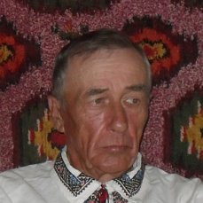
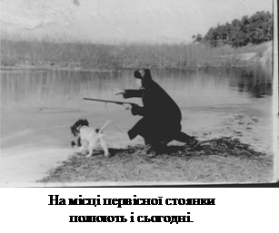

В густих лісах Полісся на березі тихоплинної річки Здвиж близько 1V тисячоліття до н.е. поселилося невелике плем’я первісних людей. Поселення розташувалось на правому березі річки, який був крутішим від лівого. Люди не випадково зупинились на цьому місці, адже поруч була річка, в якій водилося багато риби і ліс із дичиною. Багаті поклади глини слугували сировиною для виготовлення посуду та для будівель.
Поселення розміщувалося понад річкою від колишнього цегельного заводу до складу мінеральних добрив, що належав радгоспу „Катюжанський.”
Підтвердженням первісної стоянки людини є те, що здавна в цій місцевості на захід від с.Катюжанка знаходили багато кам’яних знарядь праці та полювання.
Це був перехідний період від неолітичної до енеолітичної доби в житті людства.
Первісні люди, що поселилися у нашій місцевості були представниками мисливсько-рибальських племен. Вони були високорослі і кремезні: середній зріст чоловіка перевищував 170 см, а вага досягала 75 кг. Мали відносно світлий колір волосся та шкіри.
Спочатку для житла використовувались землянки, глибина яких становила 1-1,5 метри. З середини стіни обшивалися дерев’яними пластинами
або щитами, сплетеними з гілок. Зовні присипалися землею. Висота житла досягала 1,8 – 2 м. Покрівля була двоскатною, вкрита очеретом. Підлога глиняна.
Згодом люди стали будувати будівлі, схожі на хати, зроблені з дерева, вкриті очеретом, якого вистачало по берегах р. Здвиж. Вони слугували спочатку господарськими спорудами, а потім і житловими приміщеннями.
Ще з епохи неоліту люди навчилися шліфувати камінь, свердлити в ньому отвори. На прилеглих до села територіях знайдено десятки знарядь праці з піщанику.
Чоловіки ліпили з глини і випалювали в спеціальних печах посуд. З винайденням гончарного круга посуд став кращим і надійнішим.
З лози, кори, березового гілля і ниток ремісники виготовляли кошики, рибальські сіті.
Жителі поселення вже займалися землеробством та скотарством.
Допоміжним засобом для існування було рибальство.
Вирощувались зернові культури: жито, ячмінь, просо. Пшениця культивувалась мало, бо землі малопридатні для її вирощування. Розводили свиней, овець, кіз.
Померлих ховали в могилах, а часом палили трупи і закопували, зсипавши попіл до глиняного глечика.
Ймовірно плем’я було малочисельним. Стоянка була недовготривалою, мабуть через несприятливі умови: рельєф місцевості був небезпечним для полювання, бо навкруги було безліч боліт з трясовиною, де часто гинули люди, тварини та звірі.
За наявними писемними відомостями село Катюжанка згадується у книзі нашого земляка, історика і дослідника Л.Похилевича „Сказания о населенных местностях Киевской губернии”, виданої в 1864 році.
„Катюжанка село в 10 верстах к западу от Дымера расположено по едва заметным возвышенностям, составлявшим правый берег реки Здвижа, в одной версте от села протекающего. Земля песчано-глинистая, покрытая лесами большею частью сосновыми, между коими есть и корабельные. Жителей обоего пола – 837”.
Тут же повідомляється, що за переказами село засноване вихідцями з Димера 300 років тому, старший з яких прозивався Катюга.
Ймовірно, група людей з досить сумнівною репутацією тимчасово поселилася в навколишніх лісах. На південний захід від села є урочище „Краватьки”. Ця ватага збудувала підвісні „ліжка” на деревах для ночівлі, адже в цій болотистій місцевості водилося безліч вужів, гадюк і спати на землі було небезпечно.
Недалеко від цього урочища проходив шлях з Чорнобиля до Києва, яким люди їздили на базар. Звичайно ж вони ставали об’єктом грабежу: у них відбирали гроші та товар, а коли їм пробували чинити опір, то їх жорстоко били, катували. Отже, скоро ця місцевість одержала таку репутацію як „катівня”, а згодом і село.
Таким чином село було засноване на початку XV1 століття і одержало відповідну назву.
Аналіз наявності земельних угідь у деяких корінних жителів Катюжанки дає підстави для твердження, що найперші жителі по прізвищу Осадчі (термін „осадчий” означає „перший поселенець”) і були засновниками села. Проте це не означає, що саме Осадчі і є нащадками грабіжників, що займались цим промислом ще до заселення території.
Найперші будівлі виникали в районі урочища „Гадилове” та прилеглих землях, оскільки грунти в цьому районі були найбільш придатні для обробітку.
Згодом стала розбудовуватись територія нинішнього центру села, біля сільського ставка. Адже і дорога до Києва проходила в іншому місці ніж зараз. Біля сільського кладовища дорога повертала направо, по вул.. Поштовій через сільський вигін і далі до Лісович.
До середини Х1Х століття Катюжанка підпорядковувалась Димерському староству, але в останній період панування Польщі не перетворена у приватну власність через надзвичайно бідні грунти і невисокі ціни на лісову продукцію.
У другій половині X1X ст.. в селі була збудована Свято-Михайлівська церква, дерев’яна, 6 класу. До будівництва церкви жителі Катюжанка вважались прихожанами однієї з Димерських церков – Космо-Даміанівської.
В другій половині Х1Х ст.. кількість населення швидко зростала. Так, у книзі „Киевский и Радомышльский уезды”(К.1887 р) ми зустрічаємо:
„Катюжанка, село, на правой стороне Здвижа в 10 верстах от Дымера. Жителей обоего пола православных 1333, евреев 260, римской веры – два.
По преданиям жителей село заселено в начале ХV1 века выходцами из Дымера, а по прозванию первого Осадчего Катюги, оно получило название. А нам кажется, что название этого села, равно как и соседних: Злодеевка, Шибеное намекает на непохвальную репутацию этих мест и давних их жителей. А может быть эти пустыни когда-нибудь служили местом ссылки.
Церковную общину составляют Дымерская Рудня, Абрамовка, Гута Катюжанская (стекольный завод), Феневичи.”.
Уже в 1900 році у книзі „Список населенных мест Киевской губернии” приводиться кількість населення по селах губернії. В Катюжанці вже налічується 280 дворів, жителів – 1674, з них: чоловіків – 830, жінок – 844.
Головне заняття жителів села – хліборобство. Частина селян вирушають на заробітки до Києва, деякі займаються заготовкою лісового матеріалу і відправленням його на Глібівську пристань.
Відстань від повітового міста (м.Київ) до села – 52 версти, до залізничної станції ( також у Києві) – 57 верст, до пароходної станції ( в с. Глібівка) – 17 верст, поштової – 12 верст.
Поштово-телеграфна і поштова станції знаходилися в с. Димер.
В селі на той час налічувалось 2328,5 десятин землі. З них – 68,5 десятини належало церкві, а державним селянам – 2260 десятин.
Господарство велося по трипільній системі.
В селі була одна церква, часовня, церковно-приходська школа, водяний млин, який належав Лейбі Хелемському. Зараз ця частина річища носить назву „Млиновище”.
В кузні вироблявся різноманітний сільськогосподарський інвентар, який користувався великим попитом серед селян ..........
........................................................
Більш докладно з історією села Катюжанка є можливість ознайомитись в чудовій Книзі нашого , нині покійного , односельчанина Володимира Григоровича Бубира " Я буду вертатись."